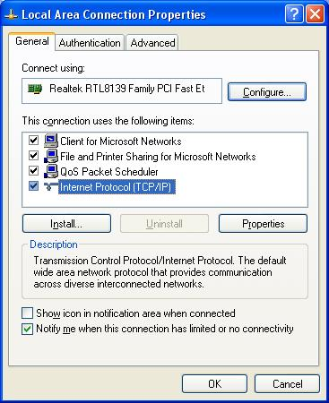
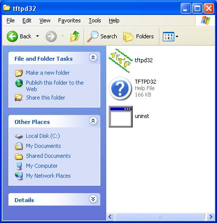
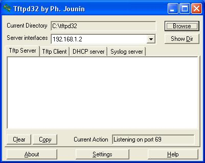
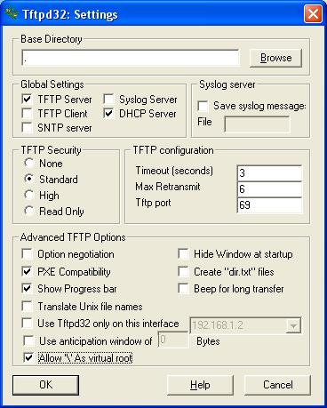
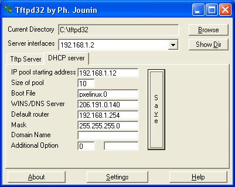
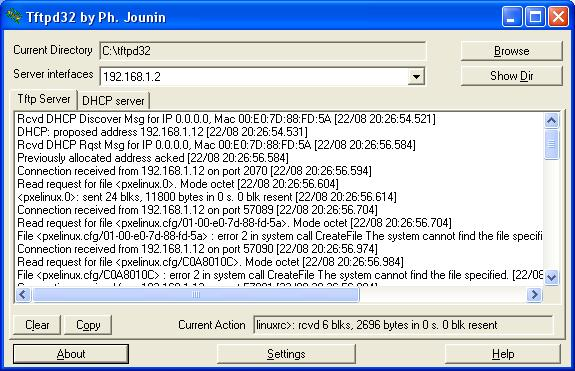

Windows Diskless
Folding HOWTO
What you need:
Broadband
always on Internet connection.
Router for the Internet connection which can have
DHCP disabled on it.
PC to act as a server for the diskless clients.
This can be your ordinary PC but it is going to need to be on all
the time – it should be on all the time folding anyway!
Other PCs as diskless clients. These need at a
minimum:
Motherboard, processor, memory, power supply.
Network card that supports PXE booting. This can
be built in to the motherboard, in fact nearly all the ones that are built
in to the motherboard seem to support network booting.
You will need a keyboard, graphics card and
monitor to set them up initially, but once the diskless computers
are running they are not required. Usually just use one of each
between all the diskless computers.
Setting it up:
N.B. The instructions below are from a Windows
XP machine with SP2 and no extra software. This should work on all
versions of Windows, but you may find options are on slightly
different screens.
Start off with just your main computer
running, all others turned off.
Open your Network Connection Status
window (from Control Panel, or from right clicking on the icon in
your status bar)

Go to the Support tab:

And then go to Details...

Write down the following, with the
details from your computer. You may only have one DNS server, that is
fine, just note down what you have.
IP Address: 192.168.1.2
Subnet Mask: 255.255.255.0
Default Gateway: 192.168.1.254
DHCP Server: 192.168.1.254
DNS Servers: 206.191.0.140,
206.191.0.210
Close that window, go back to the
General tab, select Properties

Highlight Internet Protocol (TCP/IP)
and select Properties here. Change it to Use the following IP address
and Use the following DNS server addresses and fill them in with the
information from above. If you only have one DNS server above, just
leave the Alternate DNS server blank, don't try to make something up.

Now select OK and Close respectively to
get out of all of the windows until you are back at your desktop.
Go to your router configuration window
and turn off the DHCP server. This is very router specific so I
haven't shown it here.
Download the newest version of tftpd32,
create a directory on your hard drive and put the contents of the zip
file in that directory:

Startup tftpd32, note that Windows or
any firewall program you have may pop up an alert about the ports
that tftpd32 wants to listen on.

Select Unblock / Allow or similar

Select Settings

Only have the TFTP Server and DHCP
Server enabled, leave the TFTP Security as Standard, turn on PXE
Compatibility and Allow '\' As virtual root. Select OK and close and
restart tftpd32 to get the changes to take effect.
Go to the DHCP server tab on the main window

IP Pool starting address should be the
IP address of your main box + 10
Size of pool should be number of
diskless folders plus a few. Make sure that this plus the last number
of the IP pool starting address is less than 254.
Boot File should be pxelinux.0 (number
0, not capital letter O)
WINS/DNS Server should be your first
DNS server
Default router is the default gateway
Mask is the subnet mask.
Leave the rest blank and press Save.
Download the network diskless zip file
from HERE (12MB) and extract the contents to the same directory that is
holding tftpd32.

In the pxelinux.cfg directory there is
a file called default, open this with WordPad (use WordPad and not NotePad because the file is in Unix format) and change the USER and
TEAM if necessary. You may also want to change BIG to no if you don't
want to work on big WUs.

Boot your diskless workstations, you
should see them startup in the log shown under the TFTP Server tab in
tftpd32. This can help in determining the IP addresses of them for
you to point a web browser at to monitor them. Alternatively, the machine exports the ramdisk via Windows Networking and the folding files are in \\$Machine\C\etc\folding\$Instance.

After
a couple of hours, you will see backup files appear in the same
directory. These are of the format:
backup.$IP.A.$Instance
backup.$IP.B.$Instance
latest.$IP.$Instance
where $IP is the IP address and $Instance is the instance being backed up.
This software is covered by the GNU Public License Version 2.The source and a bug / feature traker are hosted by SourceForge at http://sourceforge.net/projects/foldingcd/ and this link must be redistributed with the files.
News: